Same shape as Lil Goldie. Stained with recycled coffee beans. Different guitar entirely.
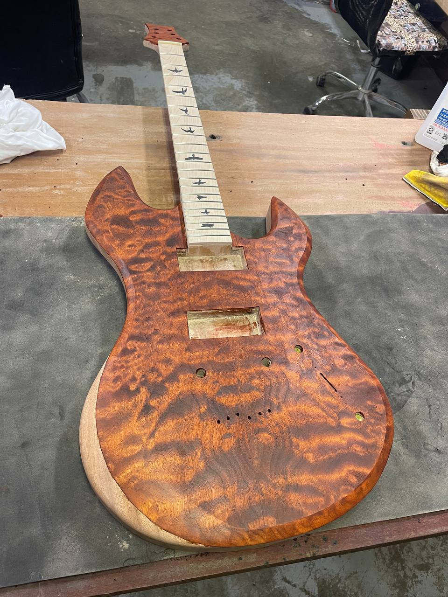
Same template as Lil Goldie — same mahogany back, same quilted maple top, same body shape with the PRS-ish horn contour. The difference is in the finish. I ran it through a coffee stain made from recycled grounds, which pulled the maple to a deep orange-red I wasn't expecting. Under certain light it's almost amber. Under others it's the color of dark roast.
The neck has bird inlays. PRS-style birds flying up a maple board — same birds you'd see on a $4,000 guitar, except I bought the neck blank and inlaid them myself.
The back tells you everything about how a maple top changes character based on what's underneath it. Lil Goldie went olive-green, Coffee Caster went deep orange-red. Same tree, different stain, completely different guitar. That's the whole argument for building both.
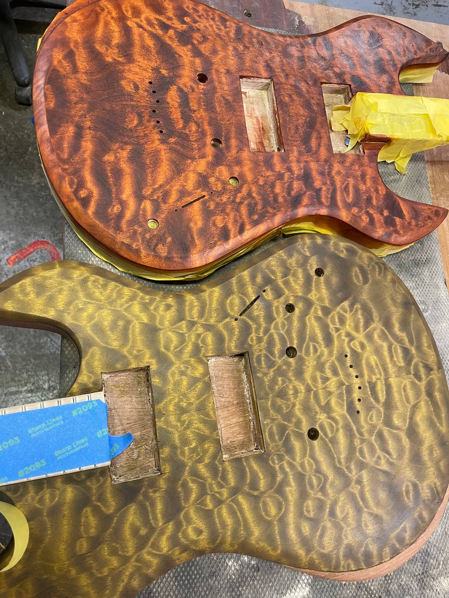
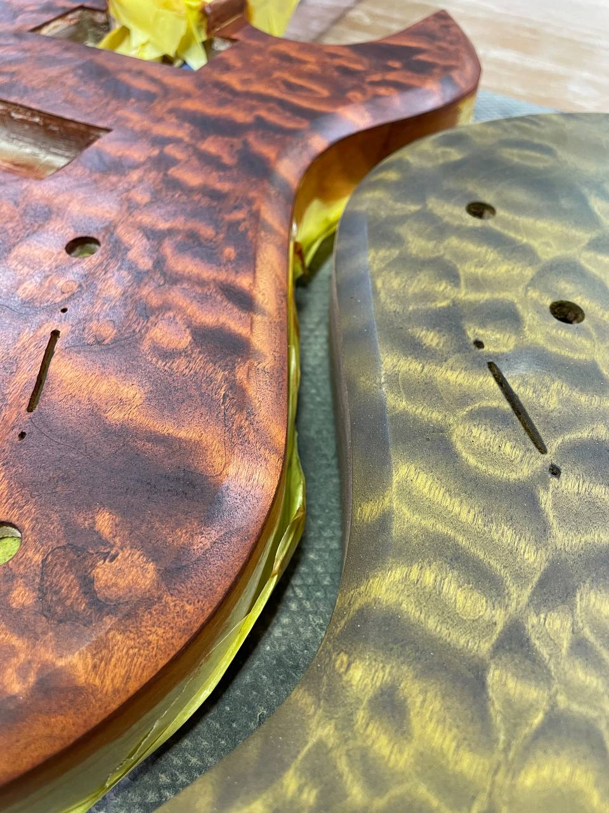
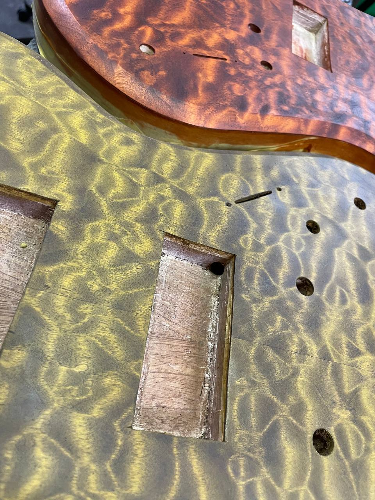
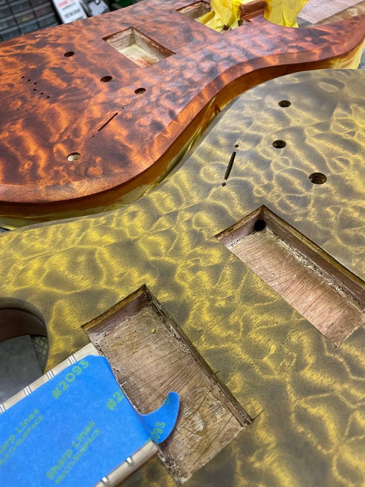
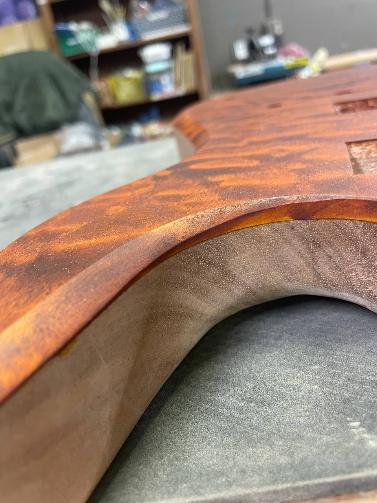
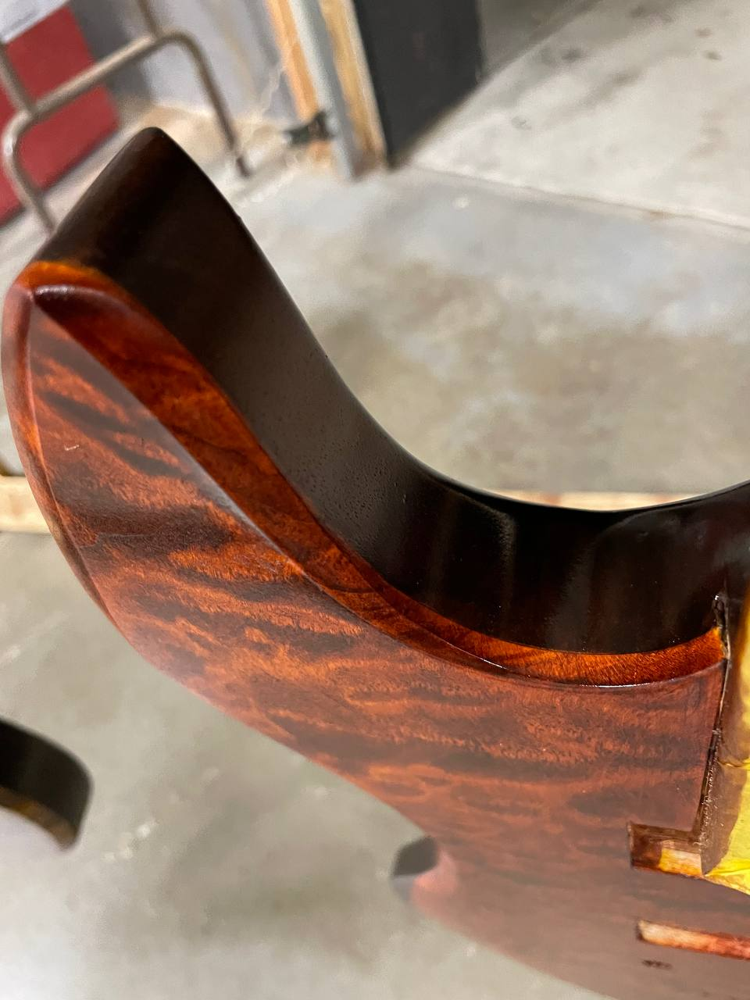
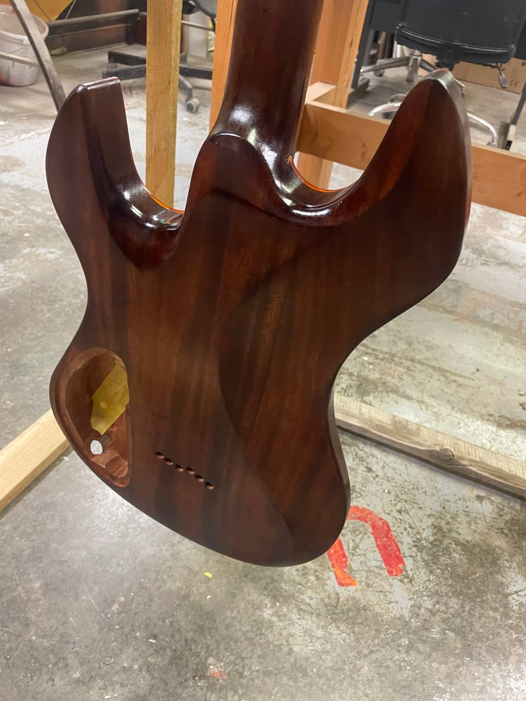
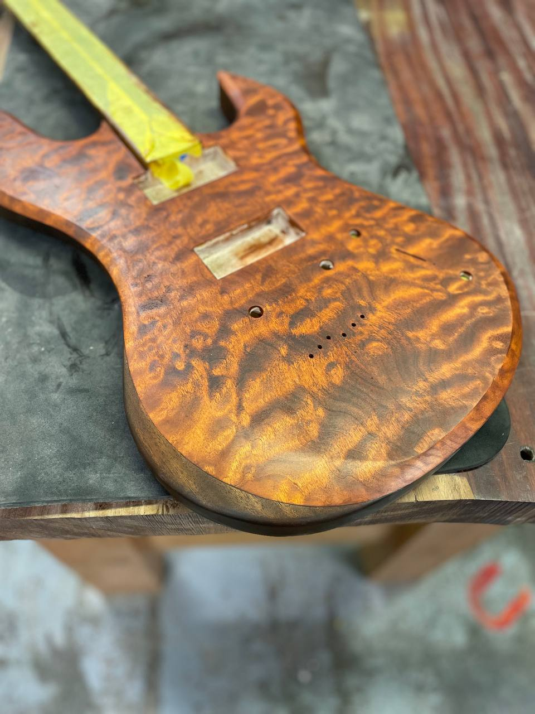
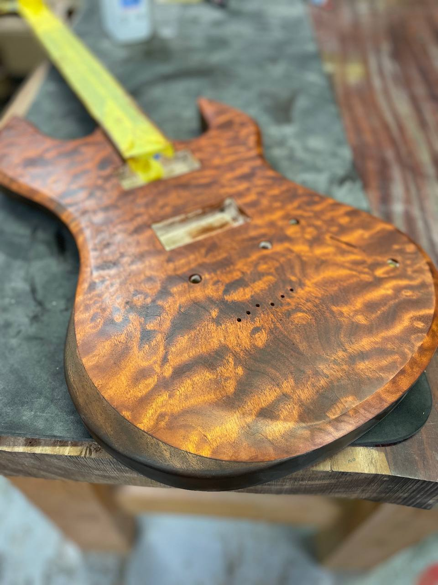
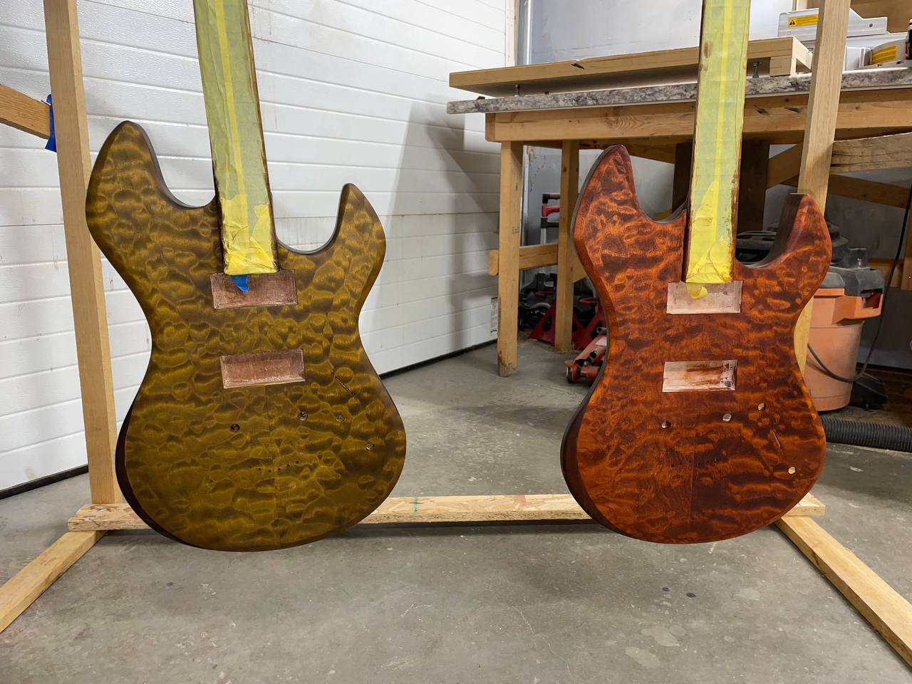
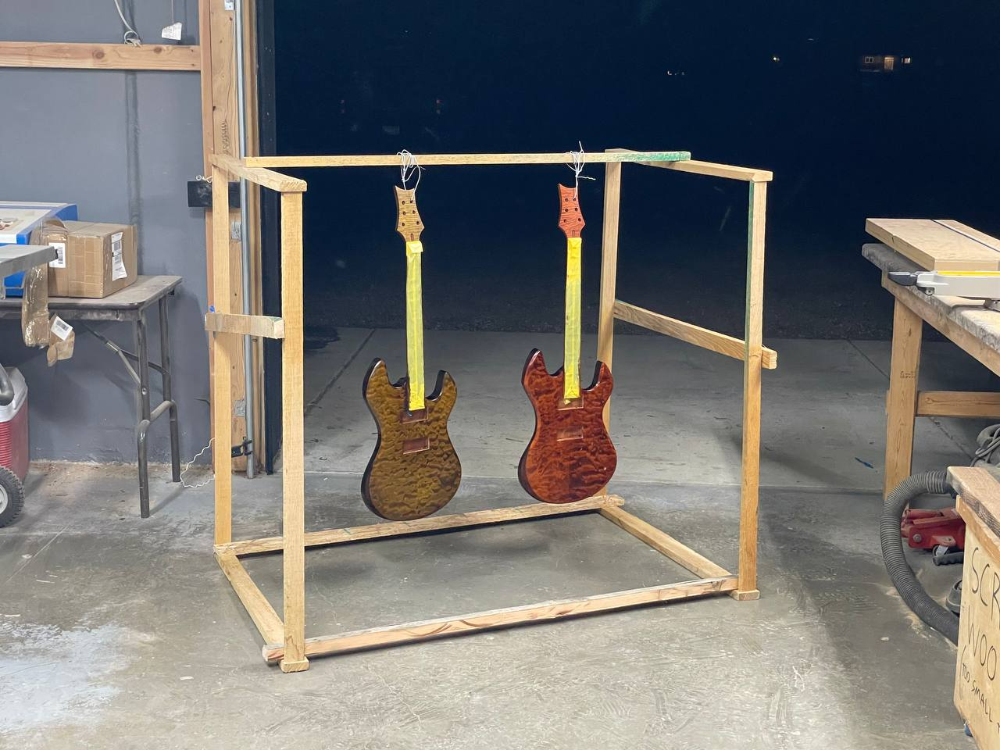